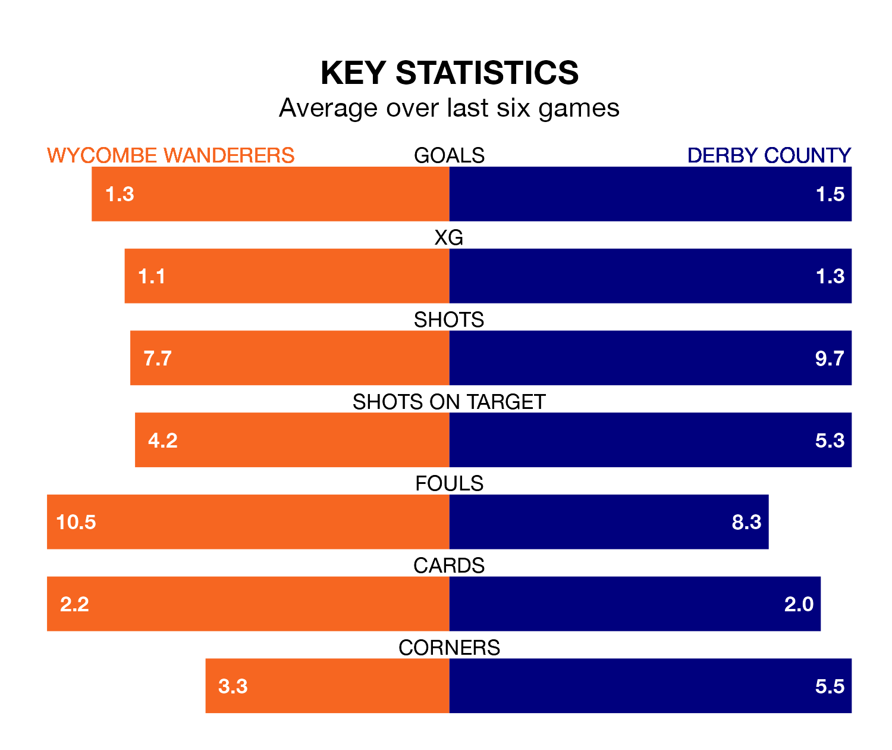

Derby County travel to Wycombe Wanderers on late Wednesday in EFL League One.
The visitors come into the game on the back of a draw in their last match, having tied with Portsmouth 2-2 away, with goals from Joe Ward.
The Chairboys also drew their last match, 0-0 against Blackpool.
Derby are second in the table after 42 games, of which they have won 25 and drawn seven, earning 82 points.
Wycombe are 11 places behind County in 13th, with 13 wins and 12 draws putting them on 51 points.
With 72 goals in 42 games so far this season, the Rams are scoring more than average in the league with 1.7 goals per game. And they are conceding fewer than average, letting in 37 goals at a rate of 0.9 per game.
Wanderers, meanwhile, are average scorers, with 1.3 goals per game. They have also conceded 1.3 goals per game.
With Joe Wildsmith between the sticks, the away team can rely on one of the league's safest pair of hands. He has kept 16 clean sheets in his 36 appearances this season, and only two other 'keepers – Portsmouth's Will Norris and Lincoln City's Lukas Jensen – have been able to prevent the opposition scoring on more occasions in EFL League One.
In the Chairboys' net, Maksymilian Stryjek has seven clean sheets in 33 games. He has conceded a goal every 86 minutes, 40% more often than the 118 minutes between goals for Wildsmith.
The hosts are in mixed form in EFL League One, with three wins and a draw from their last six games.
With four wins and a draw over that period, Derby's form is better – they have taken 13 points from 18, compared to Wycombe's 10.
In the last five years, Wycombe and Derby have played each other on five occasions. Wycombe won one of them, Derby two, and they drew twice.
On average, the Chairboys scored 1.4 goals and the Rams 1.6 in those matches.
Their last meeting was on December 16, when they played out a 1-1 draw.
Updated: 16:41 (UTC), 04/04/24